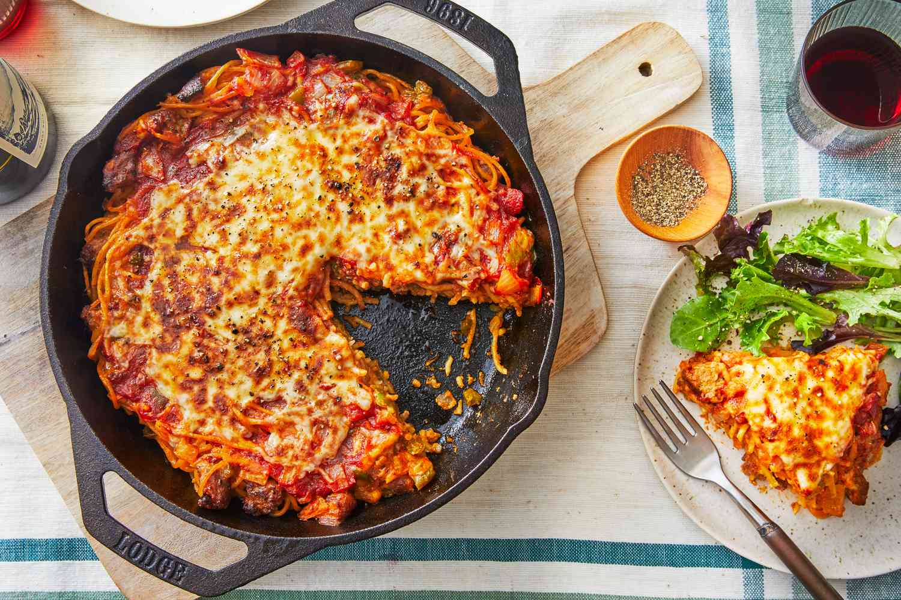

Spaghetti Pie

Description
Spaghetti pie is a delightful Italian-inspired dish that transforms al dente
spaghetti into a flavorful casserole. The spaghetti is mixed with eggs and
cheese to create a sturdy base, layered with a savory filling featuring ingredients
like seasoned ground meat, marinara sauce, and melted cheese. As it bakes, the pie
forms a crispy golden crust while maintaining a tender interior, resulting in a harmonious
blend of pasta, protein, and cheesy goodness that's perfect for family dinners or gatherings,
offering both visual appeal and delicious comfort.
Ingredients
- 8 oz spaghetti
- 2 large eggs
- 1 cup grated Parmesan cheese
- 1 lb ground beef or sausage
- 1 cup marinara sauce
- 1 cup shredded mozzarella cheese
- Salt and black pepper, to taste
- Fresh basil leaves for garnish (optional)
Instructions
- Cook Spaghetti:
Boil spaghetti following package instructions. Drain and set aside.
Prepare Spaghetti Mix:
In a bowl, mix eggs and grated Parmesan. Add cooked spaghetti, season with a pinch of salt and pepper, and mix
well.
- Make Filling:
Cook ground beef or sausage in a pan until browned. Drain fat.
Stir in marinara sauce and simmer for a few minutes.
- Build the Pie:
Grease a baking dish. Spread spaghetti mixture as the base.
Pour meat and sauce over it. Sprinkle mozzarella on top.
- Bake:
Pop it in a 350°F (175°C) oven for 25-30 mins, until it's bubbly and the cheese is golden.
- Serve:
Let it cool a bit, garnish with basil if you like, and enjoy with your loved ones. It's a tasty meal for any
occasion!
Home